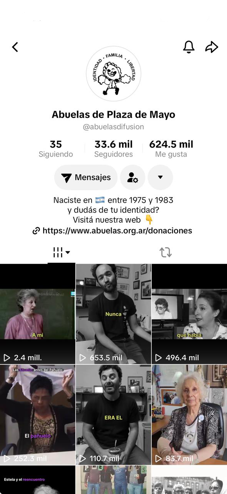
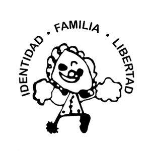
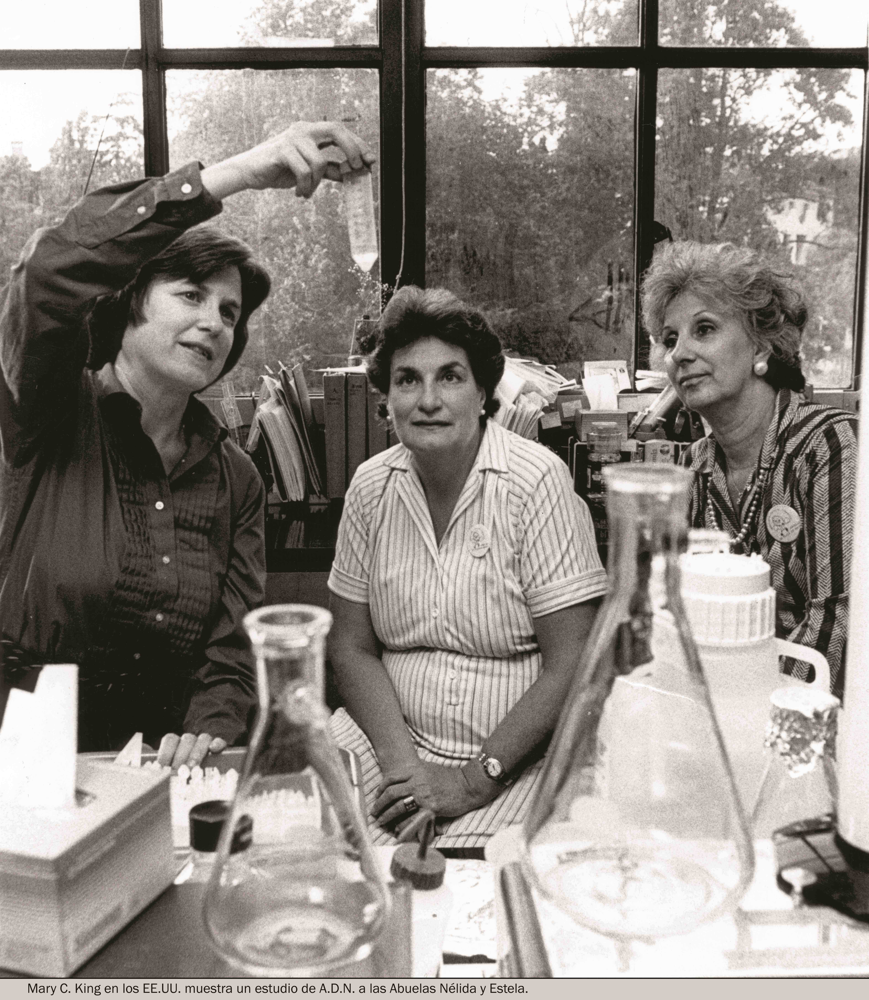

Abuelas de Plaza de Mayo
Aufbau und Entwicklung einer neuen institutionellen Präsenz auf TikTok, mit Eigenproduktion und Arbeit mit Archivmaterial.
Presse und Öffentlichkeitsarbeit · Content-Strategie · Produktion · Dreh · Schnitt · Archiv · TikTok-Betreuung
Ich habe bei Abuelas de Plaza de Mayo (Großmütter der Plaza de Mayo) im Bereich Presse und Öffentlichkeitsarbeit mitgewirkt und an der Entwicklung von Inhalten für ihre digitalen Plattformen mitgearbeitet.
In dieser Zeit habe ich den TikTok-Kanal von Grund auf aufgebaut und betreut. Die Arbeit bestand darin, die Identität, Geschichte und Arbeit einer Institution mit jahrzehntelanger Erfahrung in die Sprache und Formate einer neuen Plattform zu übertragen, ohne den Kontext oder die Verantwortung zu verlieren, die ihre Inhalte verlangen.
Eine der größten Herausforderungen war es, die Präsenz von Abuelas de Plaza de Mayo auf TikTok von Grund auf aufzubauen. Das bedeutete, mit Formaten, Rhythmen und Erzählweisen der Plattform zu experimentieren, um die Reichweite der Inhalte zu erweitern, ohne die einzelnen Beiträge von ihrem historischen und institutionellen Kontext zu trennen.


Sechs ausgewählte TikTok-Videos vom Kanal von Abuelas de Plaza de Mayo.


Die Arbeit von Abuelas de Plaza de Mayo zeigt auch, wie eng Menschenrechte, Wissenschaft und öffentliche Politik miteinander verbunden sein können.
Die Suche nach während der letzten argentinischen Diktatur zwangsadoptierten Enkelkindern machte die Entwicklung von Methoden notwendig, mit denen sich biologische Verwandtschaft auch ohne die Eltern feststellen ließ. In diesem Zusammenhang entstand der sogenannte Großelternschaftsindex, verbunden mit der Entwicklung genetischer Verfahren zur Bestimmung der Verwandtschaft zwischen Großeltern und Enkelkindern.
Diese Verbindung von Menschenrechten, Wissenschaft und Identität macht einen wesentlichen Teil der Kommunikationsarbeit von Abuelas aus: Wissenschaftliche Evidenz dient hier als konkretes Werkzeug, um Identitäten wiederherzustellen und Rechte zu garantieren.

Archiv, Grafik und Erinnerung
Neben der Videoproduktion bestand ein Teil der Arbeit darin, Archivmaterial zu nutzen und anzupassen. Diese Auswahl vereint grafische Arbeiten und Bilder rund um die Geschichte und Kommunikation von Abuelas de Plaza de Mayo und zeigt eine weitere Dimension der Materialien, mit denen ich während des Projekts gearbeitet habe.
Presse und Öffentlichkeitsarbeit
Ich war Teil des Presse- und Öffentlichkeitsteams und produzierte Inhalte, die die Arbeit, Geschichte und Aktivitäten der Institution auf ihre digitalen Plattformen brachten, im Rahmen einer institutionellen Kommunikation mit klar definierter Identität und öffentlicher Verantwortung.
Content-Strategie und -Entwicklung
Entwicklung von Formaten, die die Arbeit von Abuelas in sozialen Medien vermitteln, unter Berücksichtigung der Sprache jeder Plattform, ohne die Inhalte von ihrem historischen und institutionellen Kontext zu trennen.
Aufbau und Betreuung von TikTok
Ich habe den TikTok-Kanal von Abuelas von Grund auf aufgebaut und betreut, mit Formaten und Veröffentlichungskriterien der Plattform experimentiert und so eine institutionelle Präsenz geschaffen, wo zuvor keine bestand.
Videoproduktion
Entwicklung audiovisueller Beiträge für die digitalen Kanäle der Institution, mit Planung, Dreh und Schnitt, unter besonderer Sorgfalt für Klarheit und Konsistenz mit der Kommunikation von Abuelas.
Dreh
Aufnahme von Originalinhalten, mit Entscheidungen zu Bildausschnitt und Länge im Hinblick auf die spätere Veröffentlichung, damit das Format nicht allein vom Schnitt abhing.
Schnitt
Schnitt von Tempo, Struktur, Untertiteln, Bild und Ton, mit besonderer Sorgfalt im Umgang mit Material zu Erinnerung und Menschenrechten.
Arbeit mit Archivmaterial
Aufbereitung und Anpassung historischer Bilder und audiovisueller Aufnahmen zu neuen digitalen Beiträgen, unter Bewahrung von Kontext, dokumentarischem Wert und Bezug zur erzählten Geschichte.
Anpassung von Inhalten für digitale Plattformen
Anpassung institutioneller Inhalte an Formate und Sprache jeder digitalen Plattform, unter Bewahrung von Identität und Sinn der ursprünglichen Inhalte in jedem Umfeld.